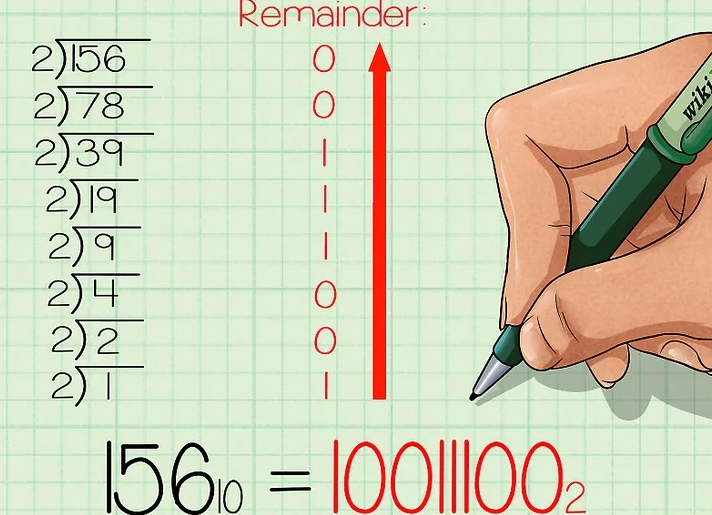
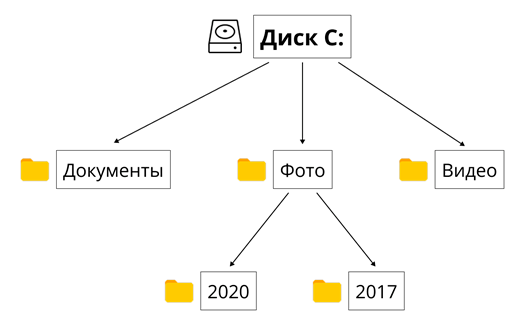
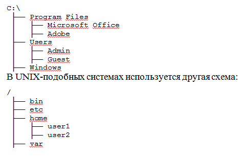
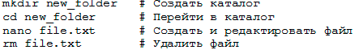
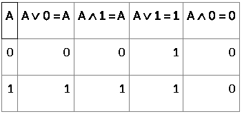
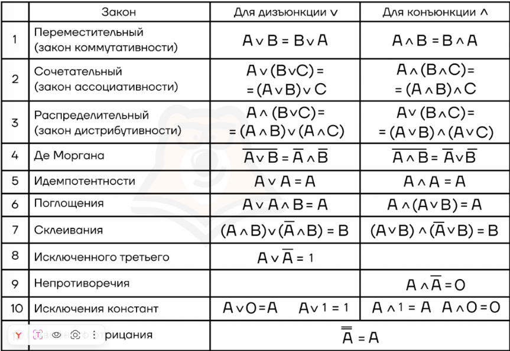
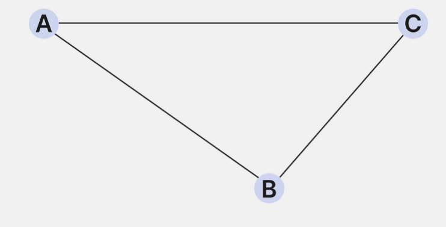
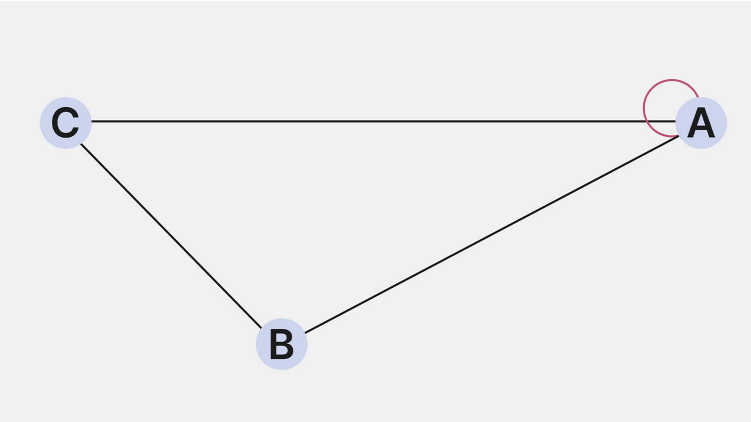

Системы счисления
Системы счисления — это методы записи чисел, применяемые во многих областях науки, технологий и других. Большинство из нас знакомы с десятичной системой, которая использует десять символов (от 0 до 9). Предположительно, она стала стандартом, потому что у человека десять пальцев, что исторически служило удобным средством для счета. Существуют и другие виды, широко используемые в разных сферах.

Десятичная система
Десятичная система счисления, известная также как система с основанием 10, является наиболее широко используемой в мире. Это позиционная система, которая использует десять символов для представления чисел: от 0 до 9. Каждый разряд в числе имеет значение, которое определяется его позицией и умножается на степень числа 10, соответствующей этой позиции.
Сумма этих значений дает общее число 2357. Эта система проста и интуитивно понятна, что делает её идеальной для повседневного использования в финансах, образовании и торговле.
Двоичная система
Основанием двоичной системы счисления является 2. Это основание выбрано не случайно, так как вся информация в компьютере представляется в виде битов — наименьших единиц данных, которые могут принимать одно из двух состояний: 0 или 1. Данный метод характеризуется использованием всего двух символов: 0 и 1. В контексте памяти компьютера:
0 обозначает отсутствие заряда или сигнала;
1 обозначает наличие заряда или сигнала.
Пример: число 2 здесь записывается как 10, что означает одну двойку и ноль единиц, а число 4 будет 100, что соответствует двум двойкам без единиц.
Алгоритм перевода числа из десятичной системы в двоичную
1.Поставьте задачу. Для этого примера давайте переведем десятичное число 15610 в двоичную систему. Запишите десятичный номер как делимое в «делении столбиком» (справа), затем запишите основание «2» как делитель, то есть слева от знака деления.
Этот метод гораздо проще понять, когда вы видите все вычисления на бумаге. Кроме того, этот метод, основанный на делении на 2, еще и довольно прост для понимания начинающих.
Чтобы не путать числа до и после перевода, стоит записывать основание системы, в которой вы работаете, рядом с каждым соответствующим числом. Тогда десятичные числа будут записываться с базовым индексом 10, а двоичные – с базовым индексом 2, соответственно.
2.Выполните действие деления. Запишите целый ответ (частное) под знаком деления, а остаток (0 или 1) запишите справа от делимого.
Так как мы сейчас делим на 2, то, когда делимое четное, двоичный остаток будет равен 0, а когда делимое нечетное, то двоичный остаток будет равен 1.
3.Продолжайте двигаться вниз, деля каждое новое частное на два и записывая остатки справа от каждого делимого. Остановитесь, когда частное будет равно 0.
4.Запишите новое, бинарное число. Прочитайте последовательность остатков снизу вверх, начиная с последнего остатка. В нашем примере у вас должно было получиться 10011100. Это двоичный эквивалент десятичного числа 156. Это же число, записанное с базовыми индексами, выглядит так: 15610 = 100111002
Этот метод может быть изменен для переведения из десятичной в «любую» систему. Мы использовали делитель 2, так как переводили в двоичную систему. Если бы мы хотели перевести наше число в девятиричную систему, то есть в систему с основанием 9, то делили бы на девять, а не на два. В результате мы бы получили число в желаемой системе.
Алгоритм перевода числа из двоичной системы в десятичную
Перевод числа из двоичной NS в десятичную осуществляется путем умножения каждого разряда числа на 2^k, где k — номер разряда, начиная с 0.
Для быстрого перевода чисел из двоичной системы счисления в десятичную желательно запомнить основные значения степеней двойки.
Конечно, можно просто последовательно получать значения, умножая предыдущее на 2: 2 на 2 — четыре, 4 на 2 — восемь и так далее. Но быстрее будет запомнить степени. Можно не все, а лишь промежуточные. Например, 25 = 32, 210 = 1024. А другие степени — уже вычислять. Например, сразу получим, что 211 = 1024 · 2 = 2048. А 29 = 1024 : 2 = 512.
Восьмеричная система счисления
Хотя восьмеричная система используется реже, она имеет применение в некоторых областях программирования. Основание — 8, что позволяет ей представлять более крупные блоки двоичных чисел более компактно. Восьмеричные числа легко конвертировать из двоичных, так как каждая восьмеричная цифра соответствует трем двоичным.
Пример: число 63 тут записывается как 77, что представляет собой восемь восьмерок и семь единиц.
Шестнадцатиричная система счисления
Шестнадцатеричная система часто используется при кодировании цветов в формате RGB. Основание — 16, что включает стандартные цифры от 0 до 9 и буквы от A до F для обозначения чисел от 10 до 15. Ее широко применяют в программировании и дизайне.
Пример: число 255 записывается как FF, что соответствует пятнадцати шестнадцатеричным десяткам и пятнадцати единицам.
Перевод чисел между системами с основаниями 8,10,16
Теперь рассмотрим перевод чисел из восьмеричной и шестнадцатеричной систем в десятичную и наоборот. Мы уже умеем делать это для двоичной системы, в других системах алгоритм принципиально не изменится.
Для преобразования числа из шестнадцатеричной или восьмеричной системы счисления в десятичную необходимо для начала записать число в развёрнутой форме, а затем сложить полученные произведения. Рассмотрим на примере уже знакомых нам чисел 2А₁₆ и 52₈.
2А₁₆ = 2 ∙ 16 ¹ + 10 ∙ 16⁰ = 32 + 10 = 42₁₀
52₈ = 5 ∙ 8¹ + 2 ∙ 8⁰ = 40 + 2 = 42₁₀
Таким образом, мы смогли перевести число из шестнадцатеричной и восьмеричной систем счисления в десятичную.
Обратный перевод тоже аналогичен тому, что был для двоичной системы счисления. Только делить теперь будем на 8 и 16 и записывать остатки в соответствующей системе счисления.
Файловая система
Файловая система является одной из ключевых составляющих любой операционной системы, обеспечивающей организацию, хранение и доступ к данным. В контексте подготовки к ЕГЭ понимание принципов работы файловых систем поможет успешно решать задания, связанные с управлением данными, их структурированием и анализом. Для успешного решения заданий необходимо понимать основные принципы работы файловых систем, их типы, способы хранения информации, а также основные операции, выполняемые с файлами. В конце статьи будут вопросы, относящиеся к тестам ЕГЭ.
Что такое файловая система?
Файловая система — это метод организации, хранения и управления данными на носителе информации (жесткий диск, SSD, флеш-накопитель и т. д.). Она позволяет операционной системе упорядоченно сохранять файлы, обеспечивать их идентификацию, доступ и изменение.
Основные функции файловой системы:
Управление файлами и каталогами
Обеспечение структуры хранения
Контроль доступа к файлам
Защита данных от потери
Оптимизация использования памяти
Основные типы файловых систем
Существует множество различных файловых систем, каждая из которых имеет свои особенности хранения и организации данных. Рассмотрим наиболее распространенные из них.
В зависимости от выбранной файловой системы меняется работа компилятора. Также автоматически подстраиваются и языки программирования.

Организация каталогов и путей к файлам
Файлы в операционной системе организованы в иерархическую структуру, где каталоги (папки) помогают группировать данные логически.
Пример структуры каталогов:
Операции с файлами
Файловая система поддерживает различные операции, такие как:
Создание (touch example.txt в Linux, New -> Text File в Windows)
Чтение (cat example.txt в Linux, Открыть в Windows)
Запись (echo "Hello" > example.txt в Linux)
Удаление (rm example.txt в Linux, Удалить в Windows)
Пример работы с файлами в командной строке:
Алгебра логики
Алгебра логики (алгебра высказываний) — раздел математической логики, в котором изучаются логические операции над высказываниями. Чаще всего предполагается, что высказывания могут быть только истинными или ложными, то есть используется так называемая бинарная или двоичная логика, в отличие от, например, троичной логики.
Любое высказывание может быть либо истинным, либо ложным. Цель алгебры логики — определять истинность логических выражений на основании отдельных высказываний. Алгебра логики действительно может, например, складывать и умножать высказывания друг с другом. Чтобы пользоваться принятыми правилами было удобно, истину принято обозначать как 1, а ложь — как 0.
Основные логические операторы алгебры логики:
Конъюнкция: логическое умножение или логическое И. В записи обозначается как ∧. А ∧ В дает истину только в том случае, если оба высказывания А и В истинны.Называется логическим умножением, потому что имеет схожий принцип работы: если хоть один из множителей будет равен 0, все выражение будет равно 0.
Дизъюнкция: логическое сложение или логическое ИЛИ. В записи обозначается как ∨. А ∨ В дает истину в том случае, если хотя бы одно из высказываний истинно.Называется логическим сложением за схожесть: если складывать только 0 и 1, чем мы и занимаемся, то достаточно одному слагаемому быть 1, чтобы все выражение не было равно 0.
Инверсия: логическое отрицание или логическое НЕ. Превращает истину в ложь, и наоборот.
Эквиваленция, если проще — равенство. Если оба высказывания равны (оба 0 или оба 1), то получим истину, иначе — ложь. Обозначается как ≡.
Импликация, иначе говоря, следование. Обозначается стрелочкой, например А ⇒ В. Если из истины следует ложь, то это автоматически ложь, все остальное — истина.
Приоритет операторов:
1.инверсия;
2.конъюнкция;
3.дизъюнкция;
4.импликация;
5.эквиваленция.
Как в математике при выполнении каких-либо действий существует приоритет операций, так и в алгебре логике также есть свой приоритет операторов. Сделано это для того, чтобы избежать неоднозначности и все могли одинаково трактовать то или иное выражение.
В процессе изучения алгебры логики были придуманы специальные таблицы истинности, которые помогают производить операции на сложных и длинных выражениях, а также установить связи между различными высказываниями.
Таблицы истинности
Таблица истинности — это таблица, которая показывает истинность всего логического уравнения в зависимости от истинности отдельных переменных.Они отлично иллюстрируют элементы алгебры логики.
Пример таблицы:
Законы логики
Графы
Граф — это математическая структура, которая используется для моделирования связей между различными объектами. Граф состоит из вершин и рёбер, которые их соединяют.
Проще всего понять природу графов на примере. Представьте, что у нас есть три города с незамысловатыми названиями A, B, C, которые соединены дорогами AB, AC и BC. На рисунке это можно изобразить так:
Граф состоит из следующих элементов:
Вершины. Ключевые точки или объекты в графе. Это могут быть, например, города на карте, веб-страницы в интернете или отделы в компании.
Рёбра. Линии, которые соединяют вершины. Например, дорога между двумя городами, гиперссылка между веб-страницами или взаимодействие между отделами в компании.
Основные понятия теории графов
В графах рёбра и вершины могут иметь разные виды связей друг с другом. Это позволяет строить гибкие связи между объектами и отражать больше полезной информации на рисунке.
Ребро, соединяющее одну вершину с другой, называется инцидентным этим вершинам. Например, ребро AB соединяет вершины A и B. Оно будет инцидентно как вершине A, так и вершине B. Отношение инцидентности существует только между вершиной и ребром, два ребра или две вершины не могут быть инцидентными.
Рёбра могут быть направленными и ненаправленными. Если вершины A и B соединяет ребро и из A можно попасть в B и обратно, то ребро будет ненаправленным. Например, дорога, соединяющая города A и B, по которой можно попасть как из A и B, так и из B в A, — это ненаправленное ребро между вершинами графа A и B.
Если же из A можно попасть в B, но из B в A нельзя, то ребро будет направленным из A в B. Ненаправленные рёбра могут показывать не только дороги между городами, но и подписки в социальных сетях. Например, если пользователь подписался на друга, но тот не ответил взаимностью, то такую связь называют ненаправленной.
Если все рёбра в графе имеют направление, такой граф называется направленным (или ориентированным), если все рёбра без направления, то граф называется ненаправленным (неориентированным), и, наконец, если в графе некоторые рёбра направленные, а некоторые нет, граф именуется смешанным.
Петля (или цикл) — особый вид ребра, которое начинается и заканчивается в одной и той же вершине. В социальной сети петля может означать, например, что человек отправил сообщение сам себе. Если в графе нет ни одной петли (цикла), такой граф называется ациклическим.
Путь, цепь и цикл в графе
В теории графов путь, цепь и цикл — способы перемещения от одной вершины к другой. Эти понятия помогают решать задачи, которые возникают при поиске оптимальных маршрутов или при моделировании сложных систем связей.
Разновидности маршрутов в графах:
Путь — конечная или бесконечная последовательность вершин и рёбер, в которой конец одного ребра является началом следующего.
Цепь — это последовательность рёбер, в которой каждое ребро связано со следующим с помощью общей вершины. В цепи могут повторяться вершины, но не рёбра.
Цикл — особый случай пути, который начинается и заканчивается в одной и той же вершине. При этом все рёбра и вершины (кроме начальной и конечной) уникальны. Важное условие цикла: вы не должны проходить по одному и тому же ребру дважды.
Виды графов
Ориентированный. Граф, в котором каждое ребро указывает своё направление с помощью стрелок, по которым можно передвигаться. Например, когда есть путь A → B → C, но нет обратных рёбер; вернуться из C в A нельзя.
Неориентированный. Граф, в котором рёбра не указывают направление. Это значит, что из любой вершины можно попасть в любую точку графа.
Смешанный. Граф, который содержит как ориентированные, так и неориентированные рёбра.
Граф с петлями. Рёбра графа, которые начинаются и заканчиваются в одной и той же вершине, называются петлями. Например, если мы строим схему связей в социальной сети, то с помощью петли можно показать, что пользователь ставит лайки своим же публикациям.
Мультиграф. Если между двумя графами существует несколько рёбер, то такой граф будет называться мультиграфом. Такие графы часто используются в схемах транспортных систем, когда между городами есть несколько разных маршрутов (железная дорога, автомобильная дорога и авиарейсы).
Связный граф — граф, в котором существует путь между любой парой вершин. Из каждой вершины по рёбрам можно добраться до любой другой вершины. В связном графе нет изолированных вершин или групп, которые не связаны с остальными частями графа.
Деревья в графах
Существует особый вид графов, в которых нет замкнутых областей, но между каждой парой вершин проложен путь. Такие графы называются деревьями и широко используются в алгоритмах поиска и сортировки данных.
Основные свойства деревьев:Между любыми двумя вершинами существует связь.
Между любыми двумя вершинами есть единственный путь. Это означает, что не может быть двух разных путей, соединяющих одну и ту же пару вершин.
В дереве с n вершин ровно n − 1 рёбер. Это фундаментальное свойство деревьев.
Электронные таблицы (Excel)
Microsoft Excel – программа, предназначенная для хранения и обработки данных в виде электронных таблиц. Основной формат таблицы Excel – xlsx.
1.Главная панель, в которой все рабочие инструменты разбиты на основные группы.
2.Меню панели содержит инструменты открытой вкладки главной панели.
3.Строка формулы содержит в себе текстовое значение выделенной ячейки без оформлений.
4.Сама таблица.
В разделе «Главное» находятся основные функции, предназначенные для базового оформления внешнего вида таблицы и данных: изменение шрифта, заливки ячейки, выравнивания текста и так далее.
Базовые формулы
1 . SUM — одна из основных формул Excel для суммирования значений в диапазоне. Пишете =SUM(A1), и Excel мгновенно складывает все числа из ячеек A1 до A10. Лайфхак: если добавить фильтры, сумма обновится автоматически.
2 . AVERAGE — рассчитывает среднее значение. Формула =AVERAGE(B2) покажет средний показатель
3 . IF — логическая проверка. =IF(C5> Aegisub>100, «Да», «Нет») вернёт «Да», если значение в C5 больше 100. Это базовая команда Excel для условных решений, таких как проверка KPI.
4 . COUNT считает количество чисел в диапазоне: =COUNT(D1). А для подсчёта непустых ячеек — COUNTA.
5 . MAX и MIN находят максимум/минимум: =MAX(E1) или =MIN(F1).